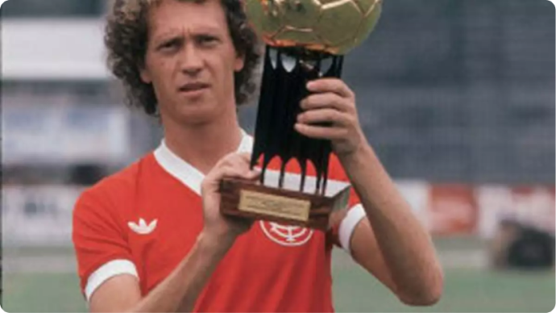
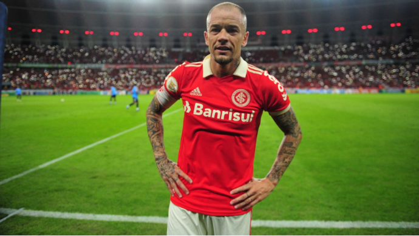

.png)
Fernando Lúcio da Costa, mais conhecido como Fernando Lucio "Fernandão", foi um ícone no mundo do futebol, especialmente no contexto do Internacional, um clube brasileiro de futebol. Ele era um jogador e capitão notável do Internacional, e sua conexão com o clube o tornou um verdadeiro "colorado", que é o termo usado para descrever os torcedores fanáticos do Sport Club Internacional.
Como ídolo do Internacional, Fernandão não apenas conquistou títulos importantes para o clube, como a Copa Libertadores da América e a Copa do Mundo de Clubes da FIFA, mas também conquistou o coração dos torcedores com sua liderança e dedicação à equipe. Ele é lembrado com carinho pelos colorados e sua contribuição para o clube é inesquecível.
Portanto, quando alguém se refere a Fernando Lúcio da Costa como um "colorado", estão reconhecendo sua ligação especial com o Internacional e sua importância como um dos maiores jogadores da história do clube.
Copa Libertadores da América (2006): Um dos momentos mais memoráveis da carreira de Fernandão foi a conquista da Copa Libertadores de 2006 com o Internacional. O clube gaúcho derrotou o São Paulo FC na final, e Fernandão desempenhou um papel crucial na campanha vitoriosa.
Copa do Mundo de Clubes da FIFA (2006): Após a conquista da Copa Libertadores, o Internacional representou a América do Sul na Copa do Mundo de Clubes da FIFA em 2006, realizada no Japão. O Internacional chegou à final e derrotou o Barcelona na prorrogação, tornando-se campeão mundial de clubes. Fernandão foi o capitão da equipe e marcou um dos gols na final.
Campeonato Gaúcho: Fernandão conquistou vários títulos do Campeonato Gaúcho com o Internacional ao longo de sua carreira, incluindo os anos de 2002, 2003 e 2004.
Paulo Roberto Falcão, o "Rei de Roma", é uma das maiores figuras do Internacional e do futebol brasileiro. Ele vestiu a camisa vermelha com maestria e, durante sua passagem pelo clube, nos encheu de alegrias e conquistas. Sua visão de jogo, elegância e habilidades técnicas no meio-campo fizeram dele um jogador inesquecível. Ele é um dos símbolos do Internacional e da tradição futebolística do Rio Grande do Sul. Falcão ajudou o Internacional a conquistar diversos títulos do Campeonato Gaúcho, elevando o nome do clube na década de 1970. Seu futebol inteligente e elegante cativou não apenas os torcedores do Internacional, mas também admiradores do esporte em todo o Brasil. Além de sua carreira no Internacional, Falcão brilhou no futebol italiano com a AS Roma, onde se tornou uma lenda e conquistou a Série A. Sua passagem pela seleção brasileira, com destaque para a Copa do Mundo de 1982, é uma parte crucial de sua história no futebol. Falcão é um verdadeiro herói para os colorados, e seu legado perdura. Seu nome é sinônimo de paixão, dedicação e vitórias para a torcida do Internacional. Ele é um dos motivos pelos quais somos orgulhosos de ser colorados, e sua influência no clube é eterna. Obrigado, Falcão, por tudo o que fez pelo Internacional e por nos proporcionar tantas alegrias. Para nós, você é e sempre será uma lenda!
Andrés D'Alessandro, conhecido carinhosamente como "D'Ale", é outro ícone do Sport Club Internacional que merece destaque. Como torcedor colorado, é com muita admiração e carinho que falo sobre a história e os feitos de D'Alessandro no clube. D'Alessandro é um jogador argentino que chegou ao Internacional em 2008 e imediatamente conquistou o coração dos torcedores. Ele era um meio-campista talentoso, com visão de jogo excepcional, habilidades técnicas brilhantes e uma entrega incansável em campo. Durante sua longa passagem pelo Inter, ele contribuiu para muitos momentos memoráveis. Além dos títulos, D'Alessandro era conhecido por sua paixão pelo clube e pelo respeito à torcida. Sua liderança em campo e sua conexão com a torcida o tornaram um dos maiores ídolos do Internacional. D'Alessandro não era apenas um jogador de futebol, mas uma verdadeira referência para todos nós, torcedores colorados. Sua entrega, dedicação e amor pelo clube são inesquecíveis, e ele continuará sendo lembrado como uma lenda do Internacional. Obrigado, D'Alessandro, por todas as alegrias que nos proporcionou e por fazer parte da nossa história. Você é um verdadeiro colorado!
